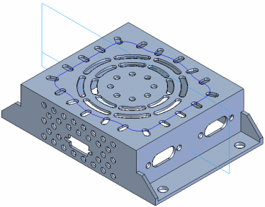
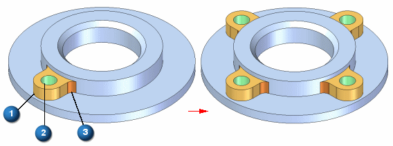
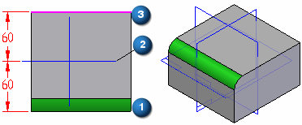
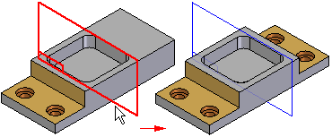

Pattern features
You construct a pattern feature by copying a parent element in a rectangular, circular, region fill, along a curve, or mirror arrangement.

When patterning part features, the parent element for a pattern can contain more than one part feature. For example, you can pattern sketch-based features, such as a protrusion (1), and a hole (2), and treatment features, such as a round (3), in one operation.

The parent element is included in the occurrence count for rectangular patterns, circular patterns, and patterns along curves. For example, if you construct a 4 by 3 rectangular pattern of holes (four holes in the x direction and three holes in the y direction) the resulting pattern feature contains the parent feature and eleven copies.
Patterning treatment features
You can pattern a treatment feature by itself or along with a sketch-based feature. For example, you can mirror the round feature (1) about the reference plane (2) to add a round to edge (3). This operation succeeds because the parent edges are symmetric about the reference plane.

Mirroring features
You can mirror one or more features, faces, or the entire part with the Mirror command. The mirror plane can be a reference plane or a planar face.

When mirroring faces or features in a solid model, if the mirrored faces touch the solid model, they are combined with the solid model, unless you select the Detach option on the command bar. When you use the Detach option, the faces or features are mirrored as a construction body.
Patterning and mirroring in a multi-body model
If the pattern feature is a cutout or hole and passes through more than one body, the pattern and mirror features will also maintain the multi-body cut definition.
How do I
Construct an ordered rectangular pattern featureCreate a 2D rectangular pattern of sketches
Construct an ordered circular pattern feature
Create a 2D circular pattern of sketches
Construct a Fast Pattern
Construct a Smart Pattern
Define the pattern plane
Learn more
Rectangular Pattern (ordered)Circular patterns
Look up more details
Pattern command (ordered)Rectangular Pattern command bar (ordered sketch)
Circular Pattern command bar (ordered sketch)
Pattern command bar